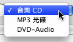
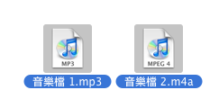
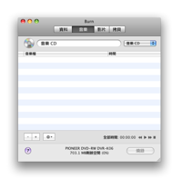
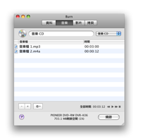
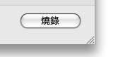
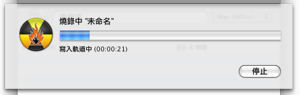
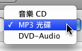
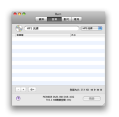
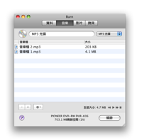
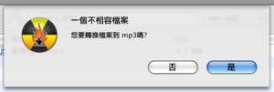

燒錄音樂光碟:
Burn 可以建立大多數相容的音樂CD, 包含 MP3 光碟. 大多數最新的設備都可以播放 MP3 光碟. 音樂CD只能燒錄在 CD上. MP3 光碟可以燒錄在任何的光碟上. Burn 也可以燒錄較不通用的格式,DVD-Audio光碟. 一些家庭劇院DVD播放器可以播放這些光碟. 這些光碟可以包含額外高品質的聲音. 這樣的光碟直接支援的檔案格式是 wav 與 flac 檔案.
燒錄音樂CD:
1 選擇音樂CD
在彈出視窗選擇音樂CD.

2 選擇一些音樂檔案
選擇一些 QuickTime 相容檔案 (影片檔案也可以,他只使用聲音的部份)
註解: 受保護的音樂檔案是不被支援的.

3 拖曳他們到清單中:
拖曳所選擇的檔案到清單中, Burn 將檢查他們是否可以被使用.

4 點擊燒錄
這將出現一個對話框.

5 選擇選項
選擇燒錄區段的選項. 須要更多的設定, 請檢視在Burn清單中裡的偏好設定.

6 燒錄光碟
現在按下燒錄以燒錄光碟.

7 Burn
將燒錄光碟
當燒錄時 Burn 將會顯示一個燒錄狀態的對話框.

1 選擇 MP3 光碟或 DVD-Audio
在彈出視窗中選擇 MP3 光碟或 DVD-Audio.

2 選擇一些音樂檔案
選擇一些聲音與影片檔案. 支援大多數的格式.
註解: 受保護的音樂檔案是不被支援的.
3 拖曳他們到清單中:
拖曳所選擇的檔案到清單中. 他們將會被新增到清單如果檔案已經是正確的格式. 如果不是 Burn 將會詢問是否轉換他們.


4 點擊燒錄
這將出現一個對話框.
5 選擇選項
選擇燒錄區段的選項. 須要更多的設定, 請檢視在Burn清單中裡的偏好設定.
6 燒錄光碟
現在按下燒錄以燒錄光碟.
7 Burn
將燒錄光碟
當燒錄時 Burn 將會顯示一個燒錄狀態的對話框.